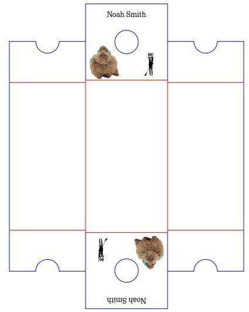
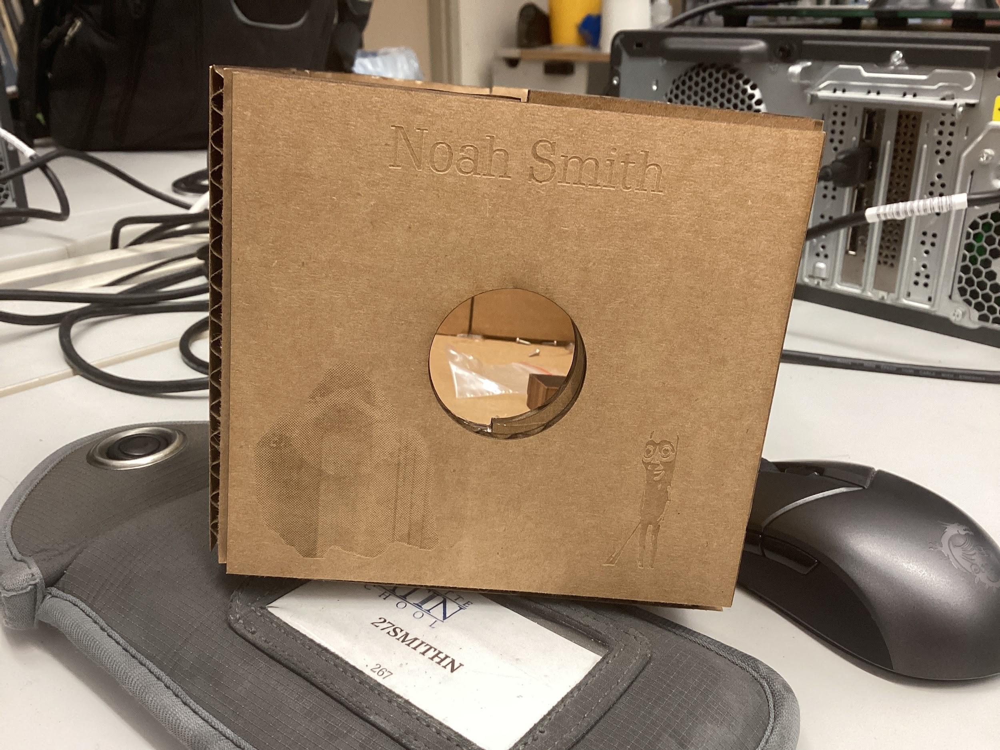
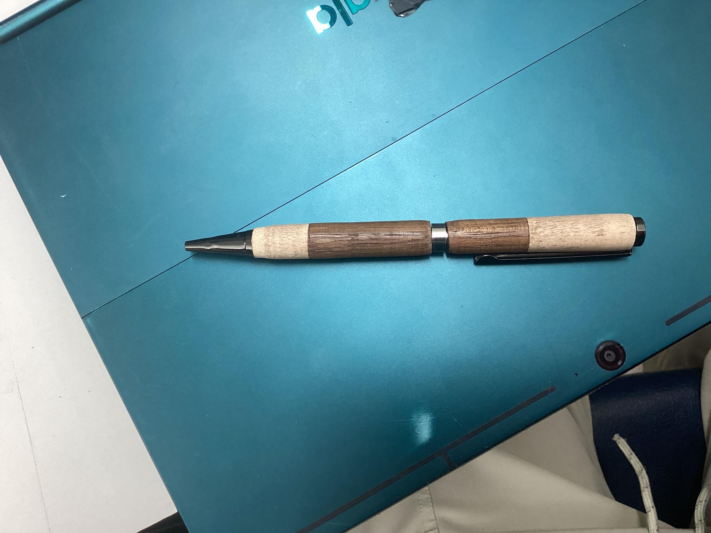
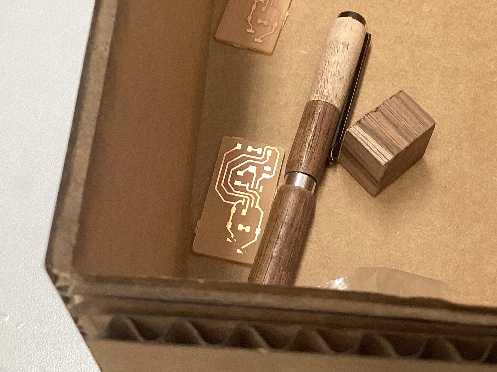
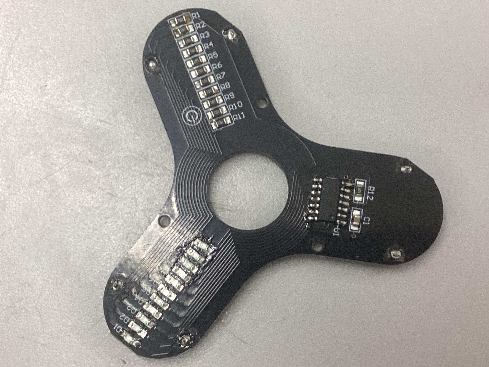

Laser Cut Storage Box
Parametric cardboard box packaging with raster laser engraving, circular viewport, and press-fit assembly.
A custom gantry platform with interchangeable toolheads, engineered for solder paste dispensing, PCB isolation milling, and automated hardware fabrication.
System architecture and mechanical considerations for the multitool.
A rigid gantry with a modular, customizable toolhead designed to automate PCB assembly. The primary target is dispensing solder paste onto surface mount pads, with expansion capabilities for pick-and-place, probing, and isolation milling.
Embedded slides from the initial capstone proposal presentation.
Hands-on rapid prototyping, machining, and electronics manufacturing experience informing this project.


Parametric cardboard box packaging with raster laser engraving, circular viewport, and press-fit assembly.

Two-tone segmented wood turning on a lathe with polished center band, tapered grip profile, and tight mechanical tolerances.

Direct PCB isolation milling on copper clad stock, routing trace isolation channels and drill holes without chemical etching.

Fine-pitch SMD hand soldering, reflow, and testing. Custom tri-lobe persistence-of-vision spinner board with LEDs, microcontroller, and passive array.